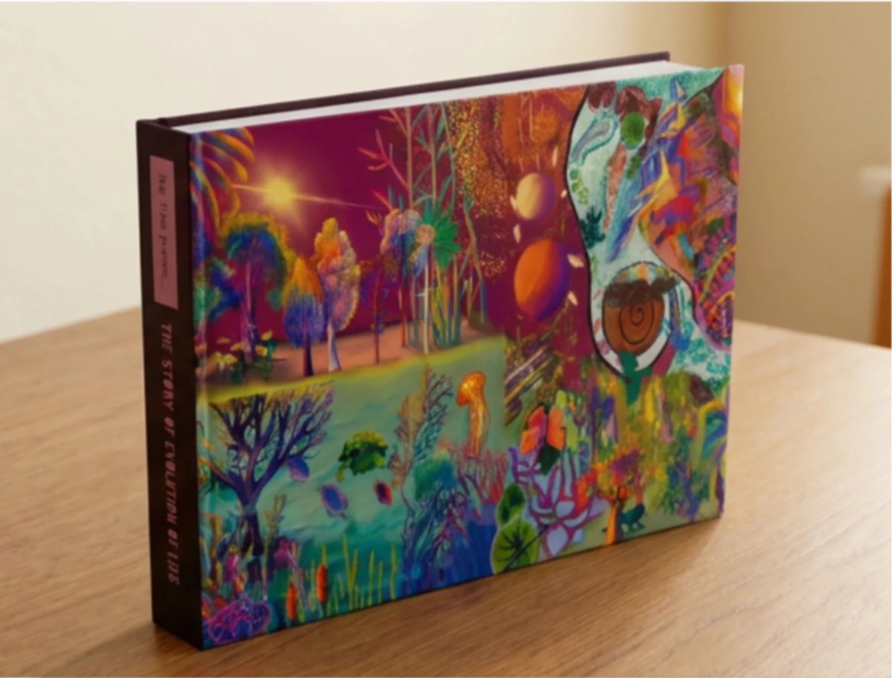
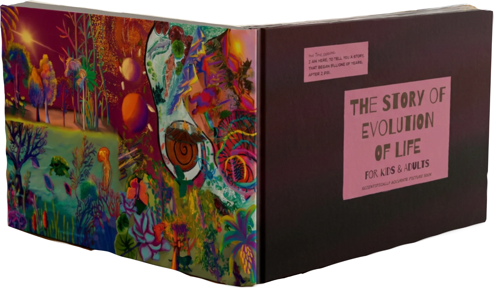
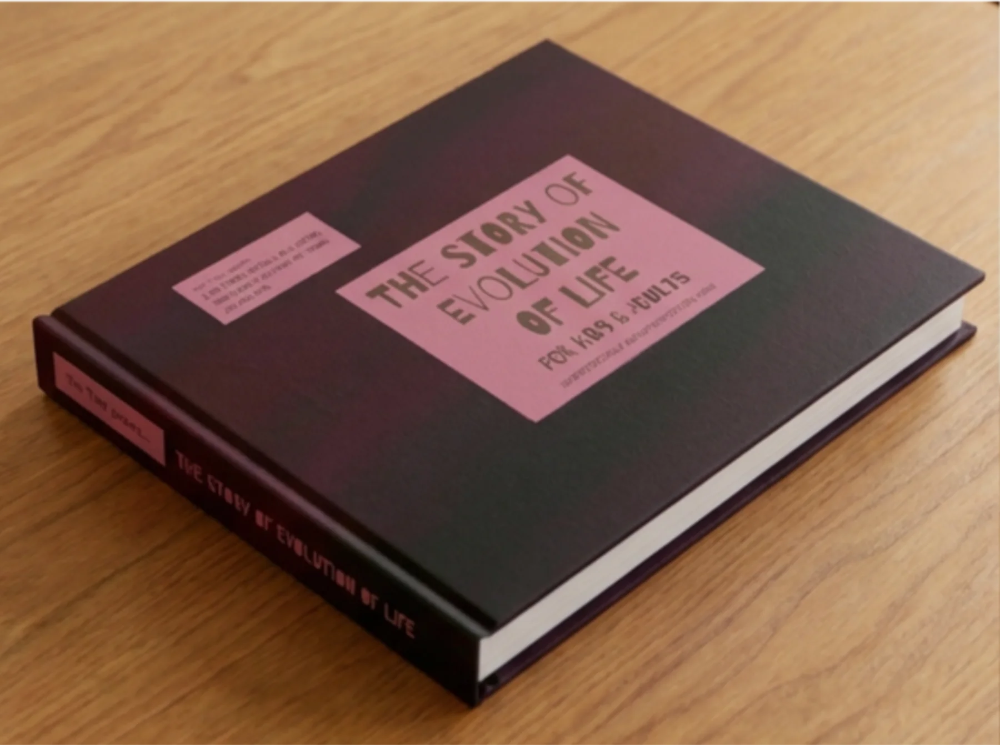

The Story Of Evolution Of Life
A thoroughly researched picture book. It begins in the silent infinite — the consciousness that the universe and time were born out of — then the making of the planets, and of Earth. Then the very first RNA, our great-great-grandmother. And from her, four billion years of life experimenting its way to today: where species are dying under human hands, while evolution surges on under our noses, where we don’t see it.

It Is Printed. It Is Here.
Hardbound, large format, and every page of it hand-painted — sitting in our Bengaluru workshop right now. Not a plan and not a pre-order: order it and it ships.



One Continuous Story
Not a list of facts by category. Read it front to back and every chapter is the consequence of the one before it — from before there was time, to what happens after us.
Before time
A world forms
~4.5 – 4.2 billion yearsFirst life
~3.8 – 2.5 billion yearsThe long middle
~2.1 – 1 billion yearsAnimals arrive
~730 – 500 million yearsOnto land
~515 – 360 million yearsThe age of reptiles
Mammals take over
Us
And after
There Are Plenty Of Evolution Books.
None As Thoughtful As This One.
None researched this deeply, and none free of the human supremacy bias that runs through almost all of them. We are a class apart.
What is on each page is not the readily available paragraph about a species. It is every system it ran, every innovation it made, and the story of why it had to.
Every Species, Properly
Features, characteristics, and the behavioural innovations each one brought with it — alongside the constraints it was up against and the openings it found. The pressure comes first; the biology is the answer to it.
No Anthropocentric Bias
Most books treat RNA, plants, even other animals as lifeless, mindless material. That could not be further from the truth. Here they are what they are: flourishing, intelligent, relentlessly adaptive life.
Intelligence Is Not Ours Alone
A prokaryote sensed, decided and acted four billion years before there was a brain to do it with. If thinking is older than neurons, the question is not whether other life thinks — it is why we assumed it didn’t.
The Questions It Leaves Open
What do we mean by god. How genes, gender and behaviour are wired to each other. Whether humans have lost the capacity for biomechanical evolution. What it means that we are one outcome of all the intelligence that came before us.
What We Are Doing To Selection
Species are dying under human hands, and at the same time evolution is surging on under our noses, in places we do not look. Both are happening. The book says so.
Painted, Not Assembled
Every spread is original artwork made for this book and nothing else — the kind of thing a child stares at long after you have stopped reading aloud.
Reach Out To Know More
The book is printed and ready to send. If there is something you want to know before you buy — a longer look inside, the reading age, copies for a school or a library — ask us and a person will answer.
- 📖 More pages from inside the book, on request
- 🏫 School, library and bulk orders
- 📦 Anything about delivery, or the book itself
Or just buy it — it is in stock and dispatches from Bengaluru.
Not sure this is the one? Check out our other products →